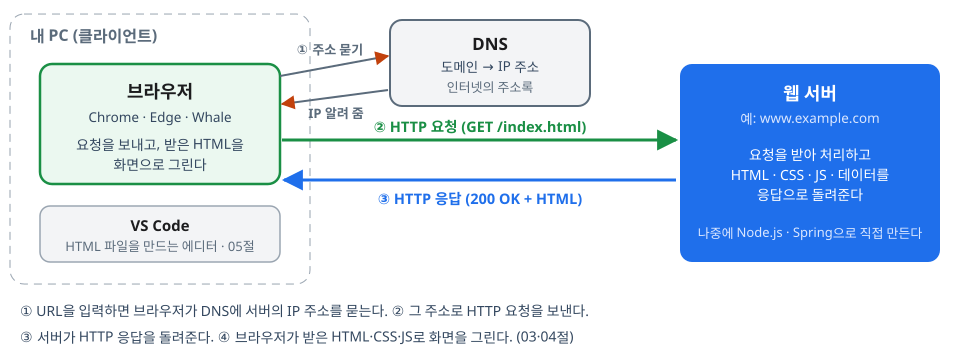

2장 · 웹의 동작 원리와 개발 도구웹은 어떻게 동작하나용어 정리인터넷 · 브라우저 · 서버 · URL — 주소를 치면 일어나는 일HTTP 요청과 응답 — 상태 코드 맛보기따라하기 — VS Code 기본 조작과 첫 HTML 파일정리와 체크리스트실습문제와 힌트 — 기본 · 필수 · 도전
2장. 웹의 동작 원리와 개발 도구
웹은 어떻게 동작하나
한 줄 요약
주소창에 URL을 입력하고 Enter를 누르면, 브라우저가 서버에 요청을 보내고 서버가 응답을 돌려줍니다. 이 장에서는 이 흐름을 이해하고, 웹 페이지를 만드는 도구(VS Code)를 손에 익힙니다.
이 과정에서 만드는 모든 프로그램(React 화면, Node.js 서버, Spring API)은 이 그림 위에 있습니다. 앞으로 새 기술을 배울 때마다 "그림의 어느 칸인가?"를 먼저 확인합니다.
1. 전체 그림 — 요청과 응답

2. 이 장이 이 과정에서 하는 역할
| 나중에 배우는 것 | 그림에서의 위치 |
|---|---|
| HTML · CSS · JavaScript (3~7장) | ③ 응답으로 오는 내용, ④ 브라우저가 그리는 화면 |
| React (8장) | ④ 브라우저 안에서 화면을 만드는 도구 |
| fetch (7장) | ② 화면을 다시 불러오지 않고 JS로 요청 보내기 |
| Node.js · Spring (9~11장) | 오른쪽 웹 서버를 직접 만든다 |
3. 이 장에서 손으로 익힐 것과 나중에 찾아볼 것
손으로 익힐 것: URL 읽기, HTTP 요청과 응답의 모양, 상태 코드 200 · 404 · 500, VS Code로 HTML 파일을 만들어 브라우저로 열기, HTTP 응답 메시지 읽기
필요할 때 찾아볼 것: TCP/IP 계층, HTTPS 인증서와 암호화 과정, HTTP/2 · HTTP/3, 쿠키와 캐시의 자세한 규칙. 처음에는 몰라도 실습할 수 있습니다. 필요해지면 MDN(developer.mozilla.org)에서 찾아봅니다.
웹 = 요청과 응답. 화면이 이상하면 "요청이 제대로 갔나? 응답이 제대로 왔나?"부터 확인합니다.